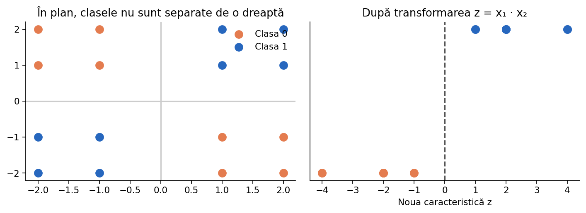

Feature Engineering
De multe ori diferența dintre un model slab și unul bun nu este un algoritm mai complicat, ci reprezentarea mai potrivită a datelor. Construim caracteristici utile și explicăm cum evităm introducerea de informații nepermise.
Ce este o caracteristică (feature)?
X are 100 de rânduri și 3 coloane.Feature engineering înseamnă crearea, selectarea, transformarea sau combinarea caracteristicilor astfel încât problema să fie mai simplu de învățat. Alegem transformările pe baza semnificației datelor și le evaluăm corect, nu doar pentru că o transformare aduce un scor public puțin mai bun.

X = [ [20, 2, 300], [25, 3, 450], [30, 1, 500], ] print('Observații:', len(X)) print('Caracteristici:', len(X[0]))
O reprezentare nepotrivită poate bloca un model
z=x₁*x₂, regula devine simplă: z>0 înseamnă clasa pozitivă.Aceasta este o demonstrație de feature engineering, nu o garanție că multiplicarea variabilelor ajută în orice problemă.
date = [(-2, -1), (-1, 2), (2, 2), (1, -2)] for x1, x2 in date: z = x1 * x2 clasa = int(z > 0) print((x1, x2), 'z=', z, 'clasă=', clasa)
Scalare: standardizare și Min–Max
(x − media_train)/abaterea_train; MinMaxScaler o transformă prin raportare la minimul și maximul observat în train.Păstrează setul de validare/test în afara lui fit. Valorile transformate pot ieși în afara intervalului [0,1] pe test: nu este automat o eroare.
from sklearn.preprocessing import StandardScaler X_train = [[1, 1000], [2, 1500], [3, 2000]] X_test = [[4, 2500]] scaler = StandardScaler() print(scaler.fit_transform(X_train).round(2)) print(scaler.transform(X_test).round(2))
Transformări polinomiale
y ≈ w₀ + w₁x + w₂x² este o parabolă în geometrie, dar este liniar față de coeficienții w. PolynomialFeatures construiește automat aceste coloane.Numărul caracteristicilor poate crește rapid cu gradul și numărul variabilelor, ceea ce mărește riscul de overfitting; de aceea transformarea se combină adesea cu regularizarea.
from sklearn.preprocessing import PolynomialFeatures X = [[2, 3], [4, 5]] poly = PolynomialFeatures(degree=2, include_bias=False) print(poly.fit_transform(X)) print(poly.get_feature_names_out(['x1', 'x2']))
Categorii nominale: one-hot encoding
handle_unknown="ignore".One-hot crește numărul coloanelor. Pentru cardinalitate foarte mare putem avea nevoie de alte reprezentări sau de modele care gestionează categorii nativ.
from sklearn.preprocessing import OneHotEncoder X_train = [['roșu'], ['albastru'], ['verde'], ['roșu']] enc = OneHotEncoder(handle_unknown='ignore', sparse_output=False) print(enc.fit_transform(X_train)) print(enc.transform([['galben']]))
Categorii ordinale și valori numerice
Distinge etichetele unei clase țintă y de caracteristicile categorice din X. Nu folosi LabelEncoder ca soluție universală pentru toate coloanele din X.
ordine = {'mic': 0, 'mediu': 1, 'mare': 2} marimi = ['mare', 'mic', 'mediu'] coduri = [ordine[m] for m in marimi] print(coduri)
Caracteristici extrase din șiruri și date calendaristice
sin/cos poate reprezenta corect apropierea dintre ora 23 și ora 0.Atenție la datele pe care nu le-am fi cunoscut în momentul predicției: un câmp creat după apariția evenimentului de prezis poate produce data leakage.
import math ore = [0, 6, 12, 18, 23] for h in ore: unghi = 2 * math.pi * h / 24 print(h, round(math.sin(unghi), 3), round(math.cos(unghi), 3))
Combinarea coloanelor eterogene
ColumnTransformer pentru transformări diferite pe grupuri de coloane: imputare și scalare pe numerice, imputare și one-hot pe categorii. Apoi trecem rezultatele într-un model prin Pipeline.Avantaj: procesul este reproductibil și evită recalcularea independentă a transformărilor pe datele noi.
import pandas as pd from sklearn.compose import ColumnTransformer from sklearn.preprocessing import OneHotEncoder, StandardScaler from sklearn.pipeline import make_pipeline from sklearn.impute import SimpleImputer X = pd.DataFrame({'vârstă': [15, 16, 17], 'oraș': ['Iași', 'Cluj', 'Iași']}) pre = ColumnTransformer([ ('numeric', make_pipeline(SimpleImputer(strategy='median'), StandardScaler()), ['vârstă']), ('categoric', OneHotEncoder(handle_unknown='ignore'), ['oraș']) ]) print(pre.fit_transform(X))
Selecția caracteristicilor
SelectKBest.Regulă esențială: dacă selectarea caracteristicilor folosește etichetele țintă, selectarea trebuie să aibă loc în interiorul fiecărui fold de antrenare, nu înainte de cross-validation.
from sklearn.datasets import load_iris from sklearn.feature_selection import SelectKBest, f_classif X, y = load_iris(return_X_y=True) select = SelectKBest(score_func=f_classif, k=2) X_redus = select.fit_transform(X, y) print(X.shape, X_redus.shape)
Data leakage prin target encoding
În olimpiadă, un scor public neobișnuit de mare poate semnala o problemă de validare; investighează înainte de a presupune că ai descoperit un algoritm excepțional.
Când merită să creezi noi caracteristici?
În laborator poți vedea cum o interacțiune de forma x₁·x₂ face separabil un set de clase care nu poate fi separat liniar în planul inițial.
De reținut pentru ONIA
Compară metodele în condiții corecte: același protocol de evaluare, date de validare separate și o metrică relevantă pentru problema rezolvată. Testul final nu trebuie folosit la alegerea hiperparametrilor.
Exemplele din această lecție sunt didactice; la competiție verifică întotdeauna enunțul, formatul datelor și metrica oficială.
Pentru detalii de implementare: Model evaluation — scikit-learn și Common pitfalls.